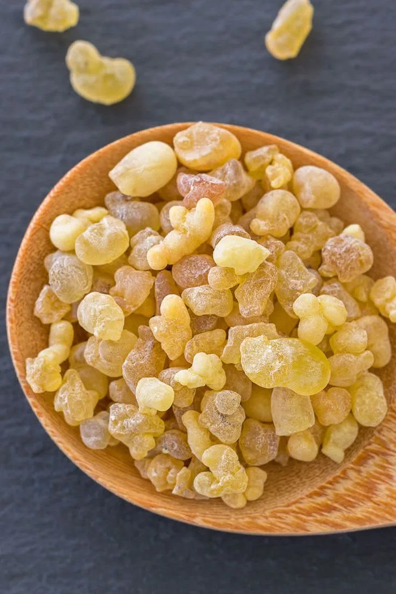

الرئيسية / مايدي بوتانيكالز
٠٤ · مايدي بوتانيكالز
مواد صومالية خام، يقودها المايدي.
Maydi Botanicalsلبان ومرّ وراتنجات وزيوت عطرية أحادية النوتة من الصومال، نادرة، تُورَّد لمصممي العطور ومصنّعيها حول العالم.

من المنحدر إلى الدمعة
ينمو المايدي على أشجار البوسويليا المتجذّرة في منحدرات الحجر الجيري الرأسية في شمال الصومال، ولا ينمو في غيرها.



لماذا يختلف المايدي
من ورقة المواد الخاصة بالدار.
| راتنج المايدي الصافي | الراتنج الصمغي الشائع | |
|---|---|---|
| النوع | Boswellia frereana | Boswellia carterii |
| الصمغ | شبه خالٍ من الصمغ | صمغ يذوب في الماء |
| الاحتراق والملمس | احتراق نظيف، وملمس مخملي | — |
| الرائحة | بلسمية وخشبية عميقة، بنوتات علوية من الليمون والحمضيات، ودفء يشبه العسل | — |
| الاستعمالات | زيت عطري ونوتة قاعدة في العطور الراقية؛ والبخور والطقوس؛ وعلكة تقليدية | — |
ما نورّده
تُحدَّد الدرجات والحد الأدنى للطلب والأسعار عند كل طلب.
لبان المايدي
السعرأعلى درجات راتنج Boswellia frereana، يُفرز باليد.
المرّ
السعرراتنج المرّ الصومالي للعطور والبخور.
الراتنجات
السعرراتنجات عطرية صومالية أخرى عند الطلب.
زيوت عطرية أحادية النوتة
السعرزيوت طبيعية لمصممي العطور، يقودها المايدي.